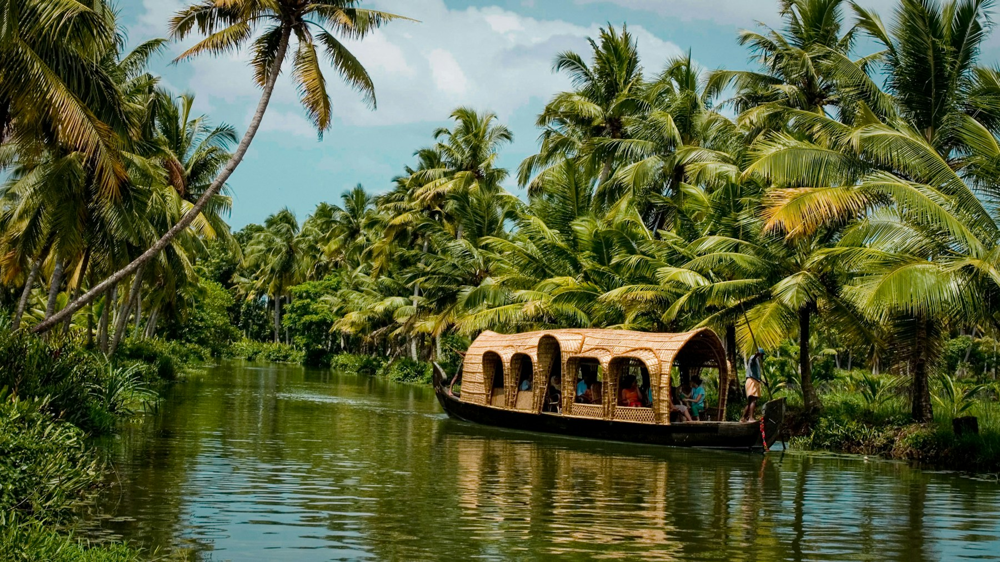
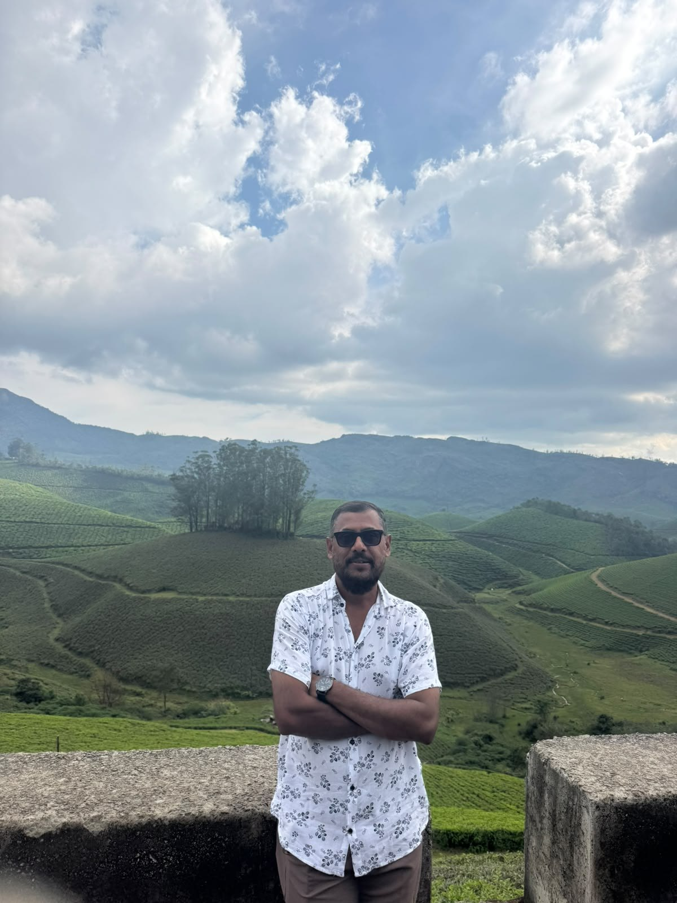
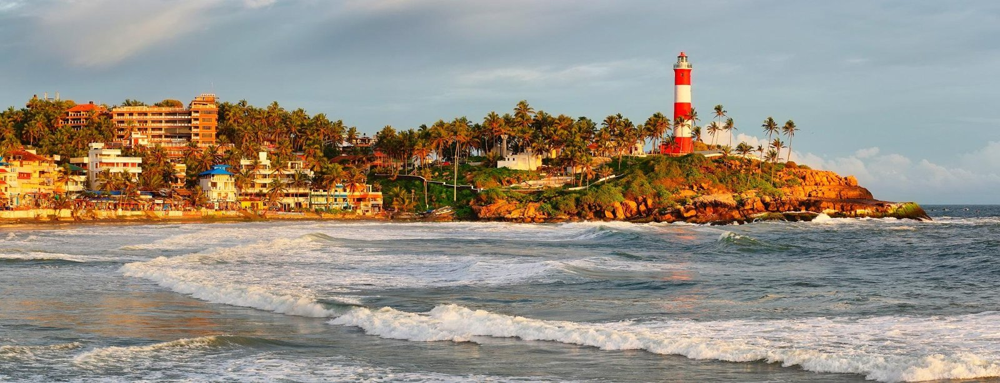

Take the long way.
Give yourself time to notice the life along the waterways.

ALL OF SOUTH INDIA · THROUGH LOCAL EYES
Backwaters, temple towns, green hills and coastlines.
Explore all of South India with Dennis Anthony, known locally as Binu.

A FAMILIAR FACE, A PERSONAL CONNECTION
I’m Dennis Anthony, known locally as Binu, a Kerala-based tour guide covering all of South India. Get to know a little about me, see my own photographs and explore the vehicles that can be part of your visit.
ONE GUIDE. THE WHOLE SOUTH.
From Kerala’s backwaters to Tamil Nadu’s temple towns, Karnataka’s heritage and the landscapes of Andhra Pradesh and Telangana — tell me where you’d love to go.
START IN KERALA. EXPLORE ALL OF SOUTH INDIA.

Chinese fishing nets, old trading streets and a waterfront shaped by centuries of exchange.
Discover Kochi
A lakeside landscape of coconut palms, village waterways and birdlife around Vembanad.
Discover Kumarakom
Palm-lined canals, traditional houseboats and everyday life woven around the backwaters.
Discover Alleppey
Tea-covered hills, winding roads and cool mountain landscapes in the Western Ghats.
Discover Munnar
Forested hills, spice-growing country and the lake landscape of the Periyar region.
Discover Thekkady
A lighthouse headland, crescent-shaped beaches and palm-lined views over the Arabian Sea.
Discover KovalamTake a closer look at each place — its stories, scenery and everyday wonders. These six Kerala highlights are a starting point. Contact Dennis to explore routes across South India.
POSTCARDS FROM THE SOUTH
Six little windows into a landscape full of contrasts.
LEAVE A LITTLE ROOM FOR WONDER
A conversation by the water. The aroma of fresh spices. Watching the day turn gold. Sometimes, the smallest moments tell the biggest stories.
Give yourself time to notice the life along the waterways.
Discover the everyday details that make a place feel alive.
Let curiosity lead you to something you didn’t expect.
A DIFFERENT WAY TO GET AWAY
We believe in taking the little detour. Staying for another cup. Meeting the people who make a place. There’s more to a place than a checklist — leave space to enjoy it.
Discover the everyday magic behind the well-known sights.
Make time for the views, conversations and places that interest you.
Bring landscapes, culture and time to unwind into one journey.
A GOOD JOURNEY STARTS WITH A HELLO
Have a question about exploring South India?
Talk directly with Dennis Anthony, your local guide.
Meet your guide. Ask a question. Find your way.